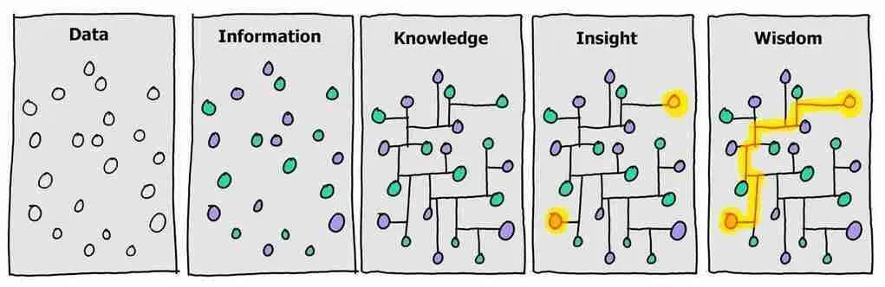

Tossaporn Saengja back

ปีที่ผ่านมาเป็นปีที่ได้ใช้เวลาเรียนรู้ตัวเองค่อนข้างเยอะ ขอเขียนไว้ให้ตัวเองในอนาคตกลับมาอ่านหน่อย
เจอจุดอ่อนตัวเองในหลายจุดเหมือนกัน อย่างแรกเลยคือยังไม่รู้ว่าชอบอะไรกันแน่นอกจากบาส (ก็คือยังตอบตัวเองไม่ได้ว่าชอบคอมด้วยซ้ำ) รู้สึกว่าพื้นฐานคนเป็นคน competitive ที่พอเวลาชนะ หรือเห็นผลอะไรบางอย่างก็จะรู้สึกชอบ (เช่น ตอนไต่แรงค์ในเกม) แต่ยังไม่เจออะไรที่ชอบแม้กระทั่งตอนไม่เห็นผลอะไรเลย (นอกจากตอนที่ได้แตะบาส ซ้อมคนเดียวก็ได้ ไม่ต้องเล่นชนะก็สนุก) ก็คงหาต่อ แต่ไม่น่ามีอะไรต้องรีบ
อย่างสองคือไม่มีเป้าหมายชีวิต ยังไม่เห็นภาพด้วยซ้ำว่าอีกสามปีตัวเองจะไปทำอะไรอยู่ไหน รู้สึกว่าถ้ามีเป้าหมายขึ้นมาอาจจะ perform อะไรได้ดีขึ้นแต่ก็ไม่อยากกดดันตัวเองจนไม่มีความสุขในการใช้ชีวิต เหมือนรับรู้มาตลอดว่าให้มีความสุขกับการเดินทาง อย่าเน้นเป้าหมายมาก ซึ่งก็ยังเห็นด้วย แต่ถ้ามีเป้าหมายขึ้นมาด้วยก็คงจะดี
อย่างสามคือไม่ค่อยเขียนหรือจดอะไร น่าจะเป็นเพราะไม่เคยคิดจะตั้งใจเขียนแบบจริงจัง การเขียนที่ผ่านมาไม่เคยเกิดประโยชน์เพราะไม่เคยกลับไปอ่านสิ่งที่ตัวเองเขียน ตอนนี้พยายามแก้ด้วยการตั้งใจเขียนให้มากขึ้น ให้อย่างน้อยตัวเองควรจะได้ประโยชน์จากการกลับมาอ่าน รวมถึงที่กำลังเขียนอยู่นี่ด้วย
น่าจะมีจุดอ่อนอื่น ๆ อีก แต่เขียนไว้สามอย่างก่อน เดียวจะเศร้าเกิน เขียนถึงอะไรดี ๆ บ้างดีกว่า
อย่างแรกเลยคือได้เข้าวงการวิจัย ทำให้รู้ว่าการทำวิจัยจริง ๆ ต้องทำยังไง เหมือนได้ปรับพื้นฐานวิธีการคิดวิเคราะห์ มีวิจารณญาณในการอ่านเปเปอร์เพิ่มขึ้นเยอะ โดยรวมรู้สึกว่าฉลาดขึ้นแหละมั้ง
อย่างสองนี่พออินกับการคิดวิเคราะห์ก็เลยลองอะไรไปเรื่อย รวมถึงลองเปลี่ยนวิธีการใช้ชีวิต การกินอาหาร การขยับใช้ร่างกาย รู้สึกเป็นปีที่สุขภาพดีที่สุดละ แต่ไม่รู้จะ maintain ได้มั้ย
ประมาณนี้น่าจะดี เขียนจุดอ่อนเยอะกว่าจุดแข็งน่าจะดีละ จะได้หาทางพัฒนาง่าย (อ่านทวนดูแล้วดูเขียนแบบบ่นไปเรื่อย ซอฟ ๆ งง ๆ ไว้เขียนเก่งกว่านี้คงจะมีโทนมีสีสันมากขึ้นมั้ง)